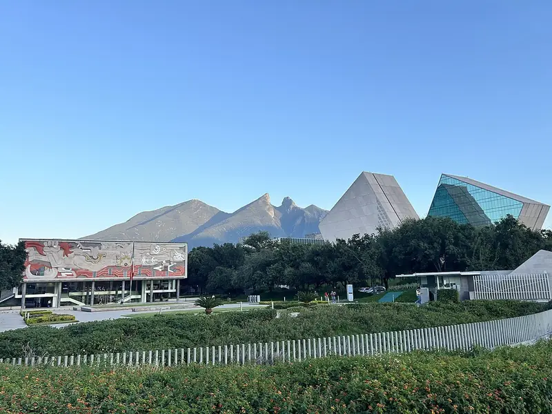

Fortalezas y áreas de mejora
Lo que hoy se te da y lo que todavía estás aprendiendo.
¿Qué tan bien se te da…?
Matemáticas y números
Para prepa · en México
No te decimos qué estudiar.
Dos tests, tu top 3 de carreras con universidades y becas reales, y tu yo del 2045 contándote su día.
Video: Pexels
01 · El problema
universitarios cambian de carrera o la dejan al inicio. Muchos eligieron sin conocerse.
Fuente: Milenio
02 · Cómo funciona
Contestas con calma, sin respuestas correctas. Pinterest es opcional.
Lo que hoy se te da y lo que todavía estás aprendiendo.
¿Qué tan bien se te da…?
Matemáticas y números
Lo que te late hacer, aunque nadie te lo pida.
¿Qué tanto te late…?
Armar o reparar cosas
Se leen en tu teléfono, de forma anónima. Solo salen números agregados, nunca tus datos.
Así se ven tus intereses (ejemplo)
03 · Lo que recibes
Tu top 3 de carreras
94%
de match contigo
Perfil de ejemplo · Modelo RIASEC + datos de O*NET
Becas
Oficiales
Cada beca trae su liga oficial y su fecha, para que no se te pase.
Audio
Tu yo del 2045 EscúchaloSello
Ninguna universidad paga por aparecer aquí.
Ejemplo para Medicina · Ranking: QS 2026 · Fotos: Wikimedia Commons
Sueño · Internacional

Ideal · Privada
Segura · Pública
2045 · Tu yo del futuro te habla
Ejemplo de alguien cuyo top 1 es Medicina. Tu audio se arma con tus resultados: eres tú, en el futuro, contándote tu día.
04 · En video
FUTURO en 50 segundos. Súbele el volumen o toca un momento para saltar a él.
05 · Privacidad
Entrarás directo al test. No tendrás que inventar ni recordar otra contraseña.
Es opcional. Tus pines se leen en tu teléfono y solo salen números agregados, nunca tus datos.
Modelo RIASEC, ocupaciones de O*NET, ranking QS y becas con su liga oficial.
06 · Preguntas
Muy pronto. Si canjeaste tu regalo, antes. Déjanos tu correo y te avisamos.
El precio está por confirmar. Lo publicamos aquí antes del lanzamiento.
Unos 5 minutos: dos tests cortos y luego tus resultados.
No. Es opcional. Si lo conectas, tus pines se leen en tu teléfono de forma anónima y solo usamos números agregados.
Cruzamos tus respuestas con el modelo RIASEC de intereses y con los datos de ocupaciones de O*NET. El resultado es tu top 3 de carreras.
No. Ninguna universidad paga por aparecer aquí. Te mostramos una sueño, una ideal y una segura por carrera.
Para alumnos de prepa en México que todavía no saben qué estudiar, o que quieren confirmar lo que ya piensan.
Del 2026 al 2045
FUTURO abre muy pronto. Déjanos tu correo y te avisamos.
¿Eres mamá o papá? El botón abre WhatsApp con el link listo para mandar.